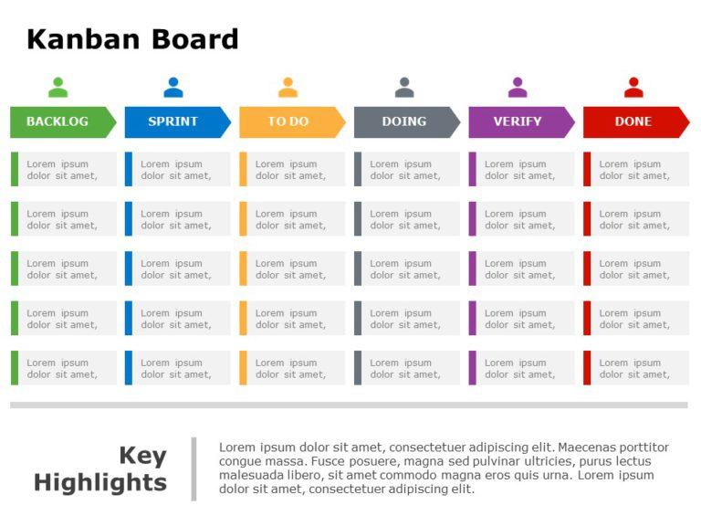

devopsIntro
Table of Contents
SDLC
Aglie SDLC :
Project is split into 3-4 sprits Each sprint is a fixed time: general it 1-4 week Each sprint slove the most important task
Release Planning:
List all the requriment(new functionality, enchancement, bug, track) bug tracking tool: JIRA, BUGZILLA
- User story/ Unique ID
- priority : Highest, Medium, Lower
- timeline / owner
- task [Unique ID]
Agile, Sprints , Daily Meetings
Split into module/components Sprints: module by module development-coding & testing
- Scrum Meeting: Dev/QA team
- Kanban Meeting: Operations team
In each sprint : How do we track and solve the issuse ? meeting
there will be meeting every day where will discuss is there a issuse ? wt we are doing today ? wt we complleted today ? wt are the obstacles do you phase ?
There are two type of meeting : Scrum, Kanband
- Scrum Meeting: Dev/QA team
- Kanban Meeting: Operations team
When we go to compaines there are product-based compaine and service-based compaine : go for other compaine as client
If you go to client and compaine has limited resource So you will be in product based project then you will attent the scrum meeting
If you are working in product-based project and you are managing all product-based project to the client optiminzing the resources
Then we will n't be able to participate in all Scrum Meeting when we will be handing having multiple prj :
- So to track day 2 day activites of multiple prj in agile we go for Kanban Meeting
If service-based product : scram product based product : kanban
However we may attended scram : If dev and qa team need some help you may attend the meeting
[comment []]

JIRA Structure
In agile the project (Version=Release) is divided into Epic(Feature,Backlog)
- Epic (Feature: The Feature that you want to launch in this release)
- Epic (Backlog: The Non-release Freature but will be completed in next sprint
Each Epic is divied into storys (User Story) Each Story is divide into task
- For DevOps: 1st sprint:Stroy(Task) will be give to DevOpS to create infrastructure cloud : jenkins, then only developer can do there task For bug fixing also devops will called For deploy to dev,qa team 1st devops need to complete the task For monitoring 1st devops need to create monitoring tool elk,grafana make sure memory is overflowed For bill-optimization also 1st devpos need to summarize cost of aws-services For running jenkins also devops need to present
Continous Development:
In aglie how do we manage Contionous Development
- Release Planning :
- Aglie-Scrum-Sprint Planning
- Setup Distribution Version Control System (VCS):
- Branching Strategy:
- Defined developer workflow polices: code-quality check, parallel-develop,prj-file structure
- Dockerize the componets/product
- Tools: git, github,gitlab,jira,Dockerfile,docker-compose,docker-stack,qa-test-code
Example: 3-Tire architecher Web Application is given

Presentation{Client} :{Front-End(html,node-js,angular-js), Logic Tire{c/java/dontnet}, Data Tire{mysql,mongo-db, } }
In gitlab : Two group: {tranning, buinesses } gitlab.com/training/
- presentation repo{html,andriod,ios,windows-app,}
- application repo{java,c,dotnet,python}
#database repo {nodejs,redis,postgress,}
Permission : Give permission and access to dev-team
Devops Security :
DevOps Cloud Course